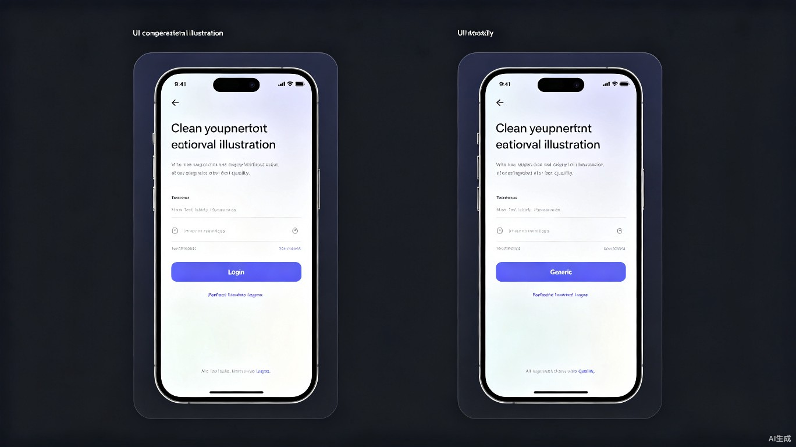

6月21日，OpenAI Codex的负责人Tibo在X上发了一条推文。281次转发，83.9万次浏览，861条回复。开发者圈子炸了。
他没有发产品更新，没有贴基准测试跑分，也没放炫酷的demo截图。他发了一段大实话，实到让很多人当场愣住。
"We built the Codex App with models that were okayish at front-end. Wait to see what we can do when we finally improve front-end capabilities significantly in our models. That day will be something."
翻译过来就是，我们是用前端能力"凑合能用"的模型来构建Codex桌面App的。等着看，等模型的前端能力大幅提升之后能搞出什么。那一天会很不一样。
一个产品负责人公开说自家底层模型在某个关键维度上只是okayish。这事儿在AI圈真不常见。通常的剧本是"Codex前端能力持续提升，敬请期待"。没人会怪他发那种话。但他选了一条更危险的路。
你品品，一个正在被87万人围观的产品掌舵人，主动把短板摊在阳光下。
Tibo 6月21日原帖截图，8875赞，861回复，83.9万浏览
先给不太关注AI编程工具的朋友做个背景铺垫。
Tibo全名Thibault Sottiaux，比利时人，数学出身。职业轨迹相当硬核，Google Maps干过，DeepMind搞过AlphaGo的基础设施。这两段经历放在任何人的简历上都是金字招牌。2024年他加入OpenAI，接手Codex这个项目的时候，团队只有四十来人，产品还只是一个概念。
不到两年，他把Codex从零推到了产品化，做成了OpenAI目前最重注的开发者产品线。桌面应用、CLI、IDE插件、云端沙箱，一整套agentic coding系统。2026年5月，Tibo被提拔为OpenAI核心产品负责人，统筹ChatGPT和Codex的合并。目标很明确，把这两个产品捏成一个超级应用。
这个人平时在X上的风格就是不废话。亲自回bug，调rate limit，公开征集用户反馈。说真的，你很少见到一个做到这个级别的人还亲自下场跟用户聊技术细节的。
所以当他说"我们连自己的App都是用还凑合的模型造的"，表面看是自黑。骨子里是对"大幅提升之后"那个版本有足够的底气。一个没有底牌的人不会主动掀桌。
Tibo说okayish，到底在说什么？三个维度的证据能拼出一个比较完整的图景。
MindStudio做过一次100小时的Codex vs Claude Code深度实测，结论相当刺眼。他们在报告里写道，Claude Code在设计质量上有明显优势，这是100小时测试中最大的惊喜。Codex生成的UI功能上没问题，结构也对，但视觉上偏粗糙。间距比例不对，留白不统一，配色能用但明显没经过推敲。
说真的，"功能齐全但视觉粗糙"这八个字，几乎就是okayish的最佳注解。
结构正确，功能齐全。间距比例偏差，留白不统一，配色"能用但没推敲"。CSS技术上valid，视觉上coarse。
设计质量有明显优势。间距更均匀，配色更协调，整体视觉完成度更高。MindStudio 100小时实测结论。
来源：MindStudio 100小时Codex vs Claude Code深度实测报告
Reddit上的吐槽就更直白了。有用户贴出Codex自动生成的表单页面截图，标题写着"OpenAI WTF is this UI?"。底下最高赞评论说，"我知道Codex做UI不行，但这已经丑到不能用了。"

更有意思的是，Tibo自己早就知道这个问题。翻他的历史发帖，3月2日他就公开回应过大量关于速度和前端能力的反馈，当时说"things are improving quickly"。可三个月过去了，6月21日的推文里，他还是在说okayish。从"在改了在改了"变成更坦诚的"现在确实还凑合"，说明前端提升这条线确实还没到位。
官方也在疯狂打补丁。开发者文档里明文教用户一套流程，先给Codex看设计稿截图，让它生成初版，用Playwright自动截图，再喂回去让它自己对比差距，反复循环直到看起来对了。他们还在产品层塞了各种工具，内置浏览器做标注，gpt-image-1.5生成mockup，frontend-skill强制模型避开默认模板。
这些补丁聪明是真聪明，解决问题也是真能解决。但有个共同底牌，全是外围工具，没有一个是模型本身变强了。打个不太恰当的比方，你在教一个没有色感的人做平面设计。你可以给他色卡、给他尺子、给他参考图、让他反复对比。他确实能做出合格的东西。但他永远不可能像有天赋的设计师那样，一眼看出留白该多大，两个颜色搭不搭。
模型没有审美，得给它装上眼睛。
Tibo推文下面的回复里，三种声音最响。
| 声音类型 | 典型表达 | 态度倾向 |
|---|---|---|
| 期待派 | Deckard的meme图获211赞，宝玉留言"Codex Design please" | 等待突破，信心充足 |
| 混合使用派 | "Codex写逻辑、Claude做UI"已成常态工作流 | 务实取舍，不纠结 |
| 吐槽派 | 要"PRO model inside"，催Linux/Windows支持 | 不满但没走 |
期待派占主流。Deckard发了一张meme图，配文"当Codex终于学会UI设计的时候"，画面里是世界焕然一新的夸张场景。211个赞。中文社区里宝玉的留言只有四个词，"Codex Design please"，干净利落，点赞数很高，代表了大量开发者没说出口的诉求。
混合使用派最务实。有人直接说，新模型在前端上跟Claude的Opus差别没那么大了，真正拉开差距的是模型在生成UI时"愿意花多大力气"去打磨细节。但差距大到他还是切到Opus做前端。另一个人说得更直白，"我用Claude在Codex里做设计审查。Codex各方面都好，就这一块不行。"
"Codex各方面都好，就这一块不行"。这句话可能是对Tibo那条推文最精准的注脚。
吐槽派也没客气。催PRO模型，催Linux和Windows支持，嫌token消耗太猛。但吐槽归吐槽，没人走。这本身就说明，Codex在其他维度上的价值大到足以让人忍受前端这个明面上的短板。
很多人不理解。AI都能通过律师资格考试，能拿IMO银牌，能在国际编程竞赛里干掉99%的人类选手。怎么做一个好看的登录页反而成了难题？
因为前端的"好"和算法的"正确"是两种完全不同的评价体系。写一个排序算法，结果对不对一目了然。做一个登录页，两个版本间距差4px，按钮颜色饱和度差5%，hover动效的缓动曲线不够自然。这些差异在功能上毫无影响，但在"好不好看"这个维度上，一个版本让人觉得专业可信，另一个让人觉得廉价可疑。
更麻烦的是，前端审美牵扯的能力链条极长。像素级视觉理解，能从截图里读出颜色、间距、层级、对齐。设计token纪律，严格遵循项目已有的设计系统，不每次都"发明"新样式。响应式与可访问性，不同屏幕尺寸、键盘导航、对比度合规。微交互感觉，hover、click、transition的自然度。品牌一致性，理解品牌调性并把这种"感觉"贯彻到每个组件。
当前模型在像素级视觉理解和设计token纪律上最弱。Claude之所以被认为"设计感更好"，大概率是训练数据分布和偏好对齐上更偏重视觉品质。而Codex在逻辑、重构、大规模代码库导航和并行agent工作流上的优势，反映的是另一套优化方向。你不可能同时在所有维度上都是最优解。
回到Tibo那句话。他说的是"when we finally improve front-end capabilities significantly in our models"。关键词是in our models。他的指向非常明确。工具、提示词层面的改进都有价值，但终极变量只有一个，底模本身变强。
Tibo说的"That day will be something"，不止是一句产品预告。你往深了想，会发现它牵动的不只是"UI好看一点"这么简单。
当agent能端到端交付有品味、可直接上生产的完整产品体验时，整个agentic开发的范式会上一个台阶。非专业开发者的门槛会断崖式下降。今天一个不会写前端的人用Codex能做出功能齐全的后台管理系统，功能都在，但界面让人不想用。当模型原生具备了前端审美能力，同一个需求出来的就是一个让人愿意每天打开的产品。
专业开发者的工作流也会彻底重构。前端工程师不用再从零画每一个界面，新核心工作变成审核agent的产出、调优细节、把关品质。设计师不再需要把每一个像素位置都标注清楚，agent自己能理解品牌调性并贯彻到组件里。
还有一层很少有人提到的。Tibo现在同时管着Codex和ChatGPT的合并。一个能让普通人用自然语言就造出"既好用又好看"的应用的超级入口，这个想象空间比单独的coding工具大不止一个量级。前端能力的跃升，是把这扇门真正踹开的那一脚。
竞争格局也会被改写。目前Anthropic在设计感上靠Opus占着感知优势，大量开发者"Codex写逻辑、Claude做UI"的混合工作流是常态。一旦Codex在前端上追平或反超，跨工具切换的摩擦消失，单一agent覆盖全流程的比例会急剧上升。
但这些都建立在一个前提上，base model在前端能力上要有质的飞跃。工具补丁再聪明，也补不出模型原生"懂审美"带来的那种质变。
回看Tibo这条推文，最值得琢磨的地方是他选择先亮底牌再谈未来。
他完全可以发一条"Codex前端能力持续提升，敬请期待"的公关稿。没人会责怪他。但他选了一条更危险也更有力的路，先承认现状的天花板，再告诉你我们正在撞穿它的路上。
"okayish"这个词选得尤其精准。它跟"bad"不沾边，也跟"amazing"不沾边。它就是okayish，能用，但远没到让人兴奋的程度。一个懂行的人才知道怎么用一个词划定能力的真实边界，既不夸大也不自贬。
先承认天花板，再告诉你正在撞穿它。
对那些每天在命令行和IDE之间反复横跳的开发者来说，这种诚实比任何跑分都更有说服力。因为他们每天都在体验那个okayish，功能跑通了但界面让人想关掉。Tibo等于替他们把这句话说了出来。然后补了一句，再等等，马上就不一样了。
83万人围观了这句话。下一次他发产品更新的时候，会有更多人点进去看。怎么说呢，这本身就是一种产品能力的体现。不是模型的能力，是人的能力。
聊到这里我突然想起一个事。当年Gutenberg发明印刷机的时候，抄书匠们也是这个反应。不是说Codex就是印刷机，但这事儿确实有点那个味道。一个工具的某个短板被公开承认，而这个工具的负责人对此毫不掩饰，甚至带着某种期待。这种姿态在科技行业的历史上往往预示着，真正的变化已经在路上了。
以上。如果对你有帮助，欢迎转发。
犀牛伯爵 · AI故事计划，记录人在AI时代的命运。